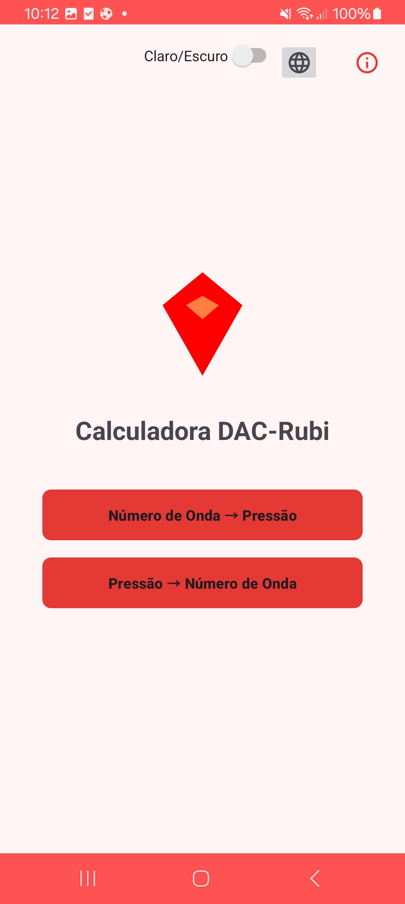

<!-- Botão de Tema Aprimorado -->
    <button id="theme-toggle" class="theme-toggle" aria-label="Alternar tema">
        <span id="theme-icon" class="theme-icon">🌙</span>
    </button>

    <!-- ... (conteúdo existente) ... -->

    <!-- Exemplo de uso das imagens sensíveis ao tema -->
    <div class="screenshot-container">
        
             
        
    </div>

    <script>
    // Sistema Completo de Gerenciamento de Temas
    document.addEventListener('DOMContentLoaded', function() {
        const themeToggle = document.getElementById('theme-toggle');
        const themeIcon = document.getElementById('theme-icon');
        
        // 1. Configuração Inicial
        const currentTheme = localStorage.getItem('theme') || 
                           (window.matchMedia('(prefers-color-scheme: dark)').matches ? 'dark' : 'light';
        
        // 2. Atualizar ícone conforme tema atual
        function updateThemeIcon(theme) {
            themeIcon.textContent = theme === 'dark' ? '☀️' : '🌙';
            themeToggle.setAttribute('aria-label', theme === 'dark' ? 
                                  'Alternar para tema claro' : 'Alternar para tema escuro');
        }
        
        // 3. Alternador de Tema
        themeToggle.addEventListener('click', function() {
            const isDark = document.documentElement.classList.toggle('dark-mode');
            const newTheme = isDark ? 'dark' : 'light';
            
            // Atualiza storage e variáveis
            localStorage.setItem('theme', newTheme);
            window.currentTheme = newTheme;
            
            // Atualiza interface
            updateThemeIcon(newTheme);
            
            // Dispara evento para componentes reativos
            document.dispatchEvent(new CustomEvent('themeChanged', { 
                detail: { theme: newTheme }
            }));
        });
        
        // 4. Sistema de Screenshots Dinâmicas
        function updateThemeImages(theme) {
            // Atualiza todas as imagens sensíveis ao tema
            document.querySelectorAll('.theme-sensitive-img').forEach(img => {
                if (img.dataset.theme === theme) {
                    img.style.display = 'block';
                    // Carrega a imagem se estiver em lazy loading
                    if (img.loading === 'lazy' && !img.src) {
                        img.src = img.dataset.src || img.src;
                    }
                } else {
                    img.style.display = 'none';
                }
            });
            
            // Atualiza elementos CSS customizados
            document.documentElement.style.setProperty('--light-display', theme === 'light' ? 'block' : 'none');
            document.documentElement.style.setProperty('--dark-display', theme === 'dark' ? 'block' : 'none');
        }
        
        // 5. Ouvinte para mudanças de tema (incluindo preferência do sistema)
        window.matchMedia('(prefers-color-scheme: dark)').addEventListener('change', e => {
            if (!localStorage.getItem('theme')) { // Só muda se não tiver preferência salva
                const newTheme = e.matches ? 'dark' : 'light';
                document.documentElement.classList.toggle('dark-mode', e.matches);
                updateThemeIcon(newTheme);
                updateThemeImages(newTheme);
            }
        });
        
        // 6. Inicialização
        updateThemeIcon(currentTheme);
        updateThemeImages(currentTheme);
        
        // 7. Ouvinte global para componentes reativos
        document.addEventListener('themeChanged', (e) => {
            updateThemeImages(e.detail.theme);
            
            // Atualiza MathJax se existir na página
            if (window.MathJax) {
                MathJax.typesetPromise();
            }
        });
    });
    </script>
